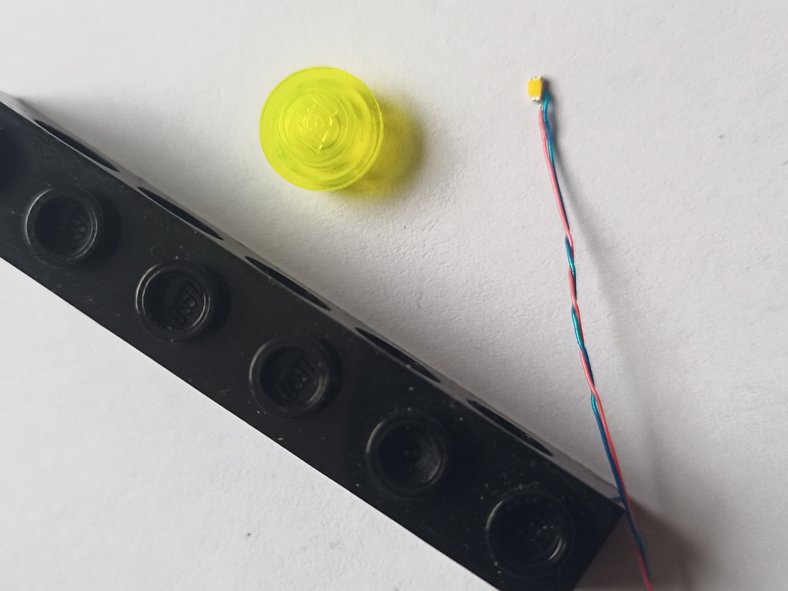
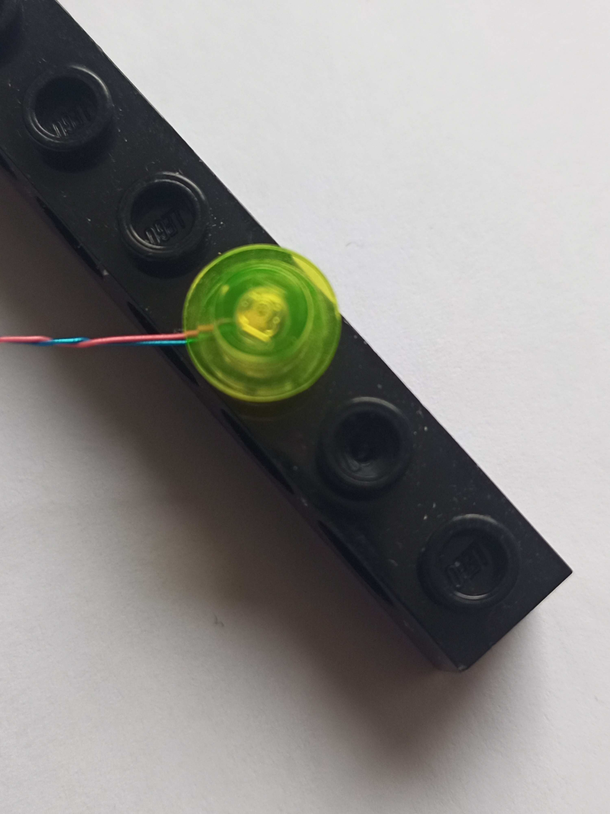

Hier sollen demnächst Walters Lego Basteleien vorgestellt werden.
Ich arbeite im Moment daran, Lego Modelle zu beleuchten und zu motorisieren.
Als allererstes mal ein ganz kleines Licht:
Ich benutze SMD-LEDs Typ 0603. Die sind winzig, aber sie lassen sich gut unter die Lego Plättchen klemmen.
Das ist ganz schön fummelig.


In den nächsten Tagen zeige ich dann auch, wie das Ganze ferngesteuert wird unter Benutzung von iotempower.